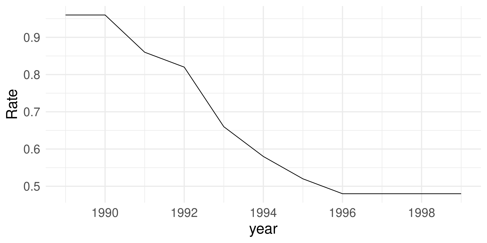
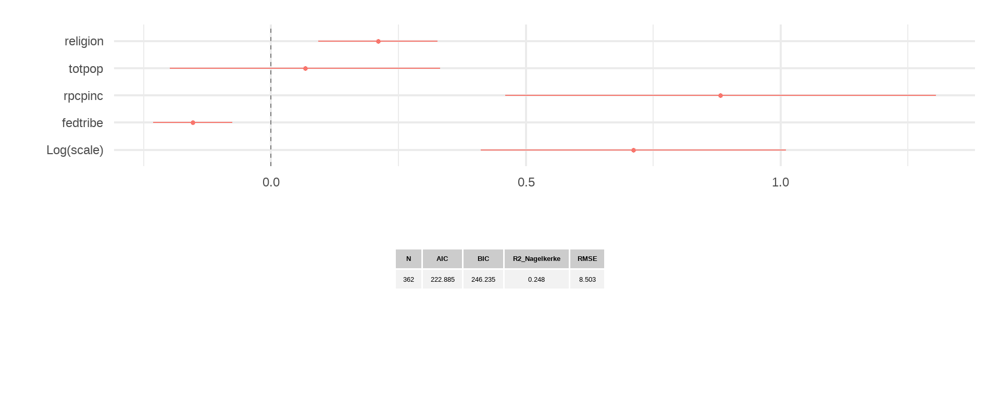
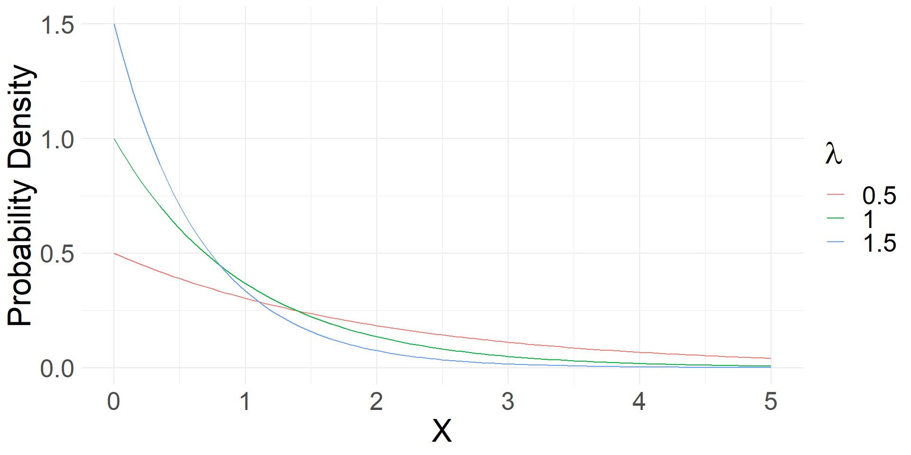
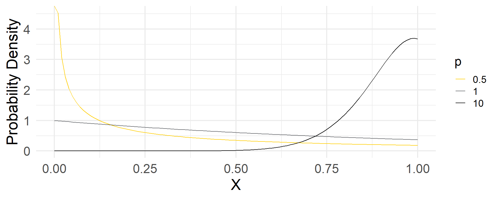
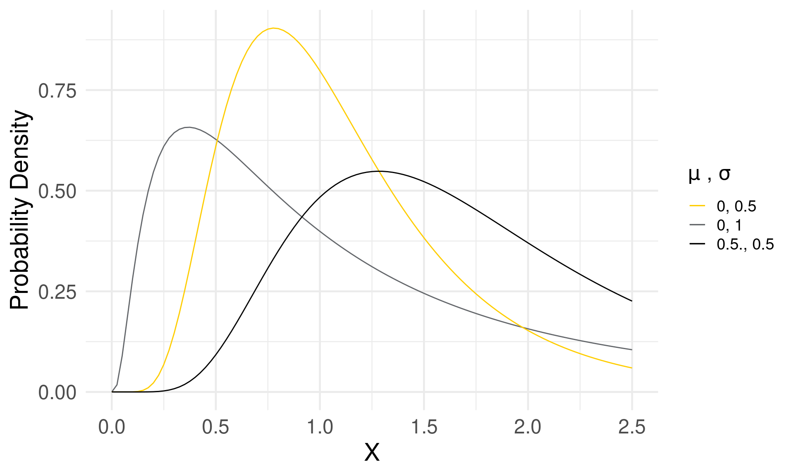
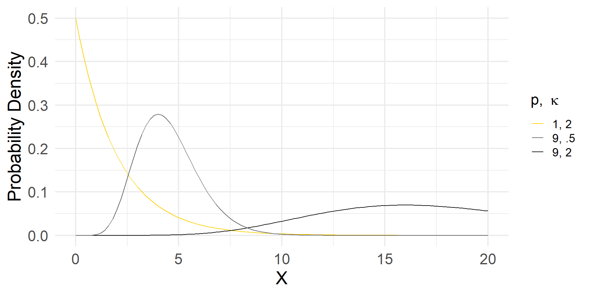
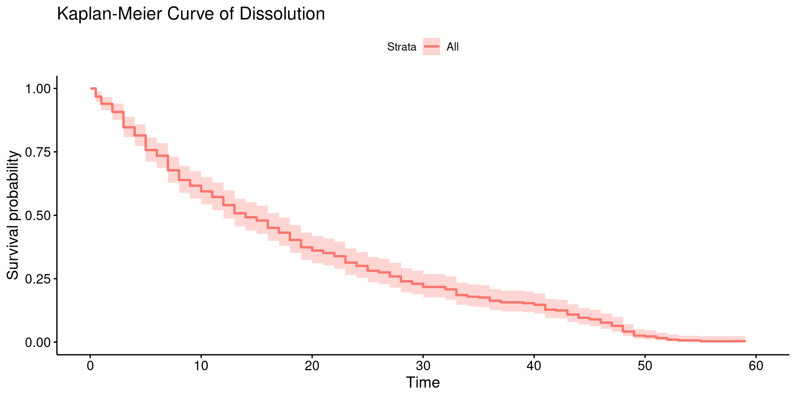
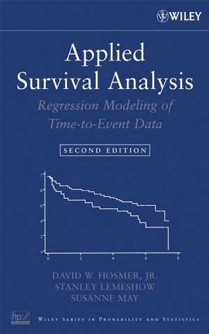
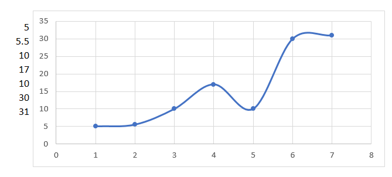

| unit | time | event | ev | risk |
|---|---|---|---|---|
| 1 | 1 | 0 | 4.3 | 1 |
| 1 | 2 | 0 | 1.2 | 1 |
| 1 | 3 | 1 | 4.2 | 1 |
| 1 | 4 | NA | 1.6 | 0 |
| 2 | 5 | 0 | 6.1 | 1 |
| 2 | 6 | 0 | 3.2 | 1 |
| 2 | 7 | 0 | 7.2 | 1 |
| 2 | 4 | 1 | 3.9 | 1 |
生存分析
Political Research with Big Data (80700673)
胡悦
清华大学
概要
- 生存分析概念
- 生存分析模型
- 特殊情况与模型选择
生存分析
什么是生存数据
- 生存于数据
- 什么时候开始/结束
- 延续（活）了多久？
- 需要多久才能发生？
- 生存之于大数据
- 一定程度上，最常见的大数据类型
- 社交媒体分析
- 司法数据分析
- 体育数据分析
- 政务数据分析
……
- 英文常用词汇
- Survival analysis
- Event history analysis (discrete)
- Failure analysis
- Duration analysis (continuous)
- Frailty (e.g., engineer)
- Cure models (e.g., medical)
理解生存数据本质
- EVs如何影响事件发生？
- 事件是否被视为重复的？
- 发生周期（duration）是否时完全可见的？
- 事件分布（event rate）如何在时间维度上变动？
⇓
三种建模策略
- Count：发生了多少次
- Discrete：年、月、天；0s & 1s.
- Continuous: 具体时长
Event History
Discrete Modeling
关注事件发生点，解释与何因素有关
主要决定：
- 何时开始计时
- 如何判定事件发生
主要步骤：
- 建构结果变量：通常该变量在事件发生时记为1，之前均为0
- 测量解释变量：在每个时间点均有记录
- 估计
- Risk set： 在给定时间点观测单元触发事件的可能性, \(R(t)\equiv \{i, y_{it} = 0 | y_{it} = 1\}.\)
结果变量分布
Survival rate: \[S(t|X) = P(T > t | X).\]
Density: PDF
\[f(t|x) = P(T = t | X).\]
Cumulative distribution: CDF
\[F(t) = P(T\leq t | X) = 1 - S(t).\]
Hazard: \[P(T = t|T\geq t, X) = \frac{f(t|X)}{S(t|X)} = \frac{P(T = t | X)}{P(T > t | X)}.\]
Discrete Model分析工具
- logit/probit
- c-log-log
- scobit
- expit
Logit/Probit模型
- logit/probit
- c-log-log
- scobit
- expit
令 \(Y^*\) 为导至可见事件( \(Y_{it}\) )发生的不可见变量：
\[Y_{it} = \begin{cases} 1 & \text{if } Y^*\geq 0, \\ 0 & \text{if } Y^*< 0. \end{cases}\]
那么
\[\begin{align} P(Y_{it} = 1|X) =& P(Y^* \geq 0|X)\\ =& P(X\beta + \epsilon\geq 0|X)\\ =& P(\epsilon\geq 0 - X\beta|X)\\ =& 1 - P(\epsilon\leq - X\beta|X)\\ =& 1 - F(-X\beta|X) \end{align}\]
Logit模型
令 \(\epsilon\sim logistic\),1 则 \[P(Y_it = 1|X) = 1 - \Lambda(-X\beta) = \Lambda(X\beta).\]
代入logistic分布可得，
\[\begin{align} P(Y_{it} = 1|X) =& 1 - \frac{e^{-X\beta}}{1 + e^{-X\beta}}\\ =& \frac{e^{X\beta}}{1 + e^{X\beta}}\\ P(Y_{it} = 0|X) =& \frac{1}{1 + e^{X\beta}} \end{align}\]
应用举例
美国印第安部落与州协调法案（Indian Gaming Compact）在各州的推行情况。
解释变量包括：religion (religion), the number of federally recognized tribes (fedtrib), total population (totpop), real income per capita (rpcpinc)等.
| state | stateno | year | totpop | rpcpinc | ideology | fedtribe | religion | adopt_year |
|---|---|---|---|---|---|---|---|---|
| AL | 1 | 1989 | 4.102 | 18.02829 | -23.1 | 1 | 33.9 | NA |
| AL | 1 | 1990 | 4.118 | 17.85045 | -23.1 | 1 | 33.9 | NA |
| AL | 1 | 1991 | 4.087 | 18.02460 | -23.1 | 1 | 33.9 | NA |
| AL | 1 | 1992 | 4.131 | 18.56343 | -23.1 | 1 | 33.9 | NA |
| AL | 1 | 1993 | 4.181 | 18.66846 | -23.1 | 1 | 33.9 | NA |
| AL | 1 | 1994 | 4.215 | 19.08401 | -23.1 | 1 | 33.9 | NA |
# Creating the event history record
df_iga$adopt_ig <- NA
df_iga$adopt_ig[df_iga$year == df_iga$adopt_year] <- 1
df_iga$adopt_ig[df_iga$year < df_iga$adopt_year |
is.na(df_iga$adopt_year)] <- 0
# Creating the risk set
df_iga$risk_ig <- NA
df_iga$risk_ig[df_iga$year <= df_iga$adopt_year |
is.na(df_iga$adopt_year)] <- 1
df_igaSum <- group_by(df_iga, year) %>%
summarise(
sum_adopt = sum(adopt_ig, na.rm = TRUE),
sum_risk = sum(risk_ig, na.rm = TRUE)
) %>%
mutate(hazard = sum_adopt / sum_risk,
survival = sum_risk / 50)| year | sum_adopt | sum_risk | hazard | survival |
|---|---|---|---|---|
| 1989 | 0 | 48 | 0.00 | 0.96 |
| 1990 | 5 | 48 | 0.10 | 0.96 |
| 1991 | 2 | 43 | 0.05 | 0.86 |
| 1992 | 8 | 41 | 0.20 | 0.82 |
| 1993 | 4 | 33 | 0.12 | 0.66 |
| 1994 | 3 | 29 | 0.10 | 0.58 |
| 1995 | 2 | 26 | 0.08 | 0.52 |
| 1996 | 0 | 24 | 0.00 | 0.48 |
| 1997 | 0 | 24 | 0.00 | 0.48 |
| 1998 | 0 | 24 | 0.00 | 0.48 |
| 1999 | 0 | 24 | 0.00 | 0.48 |
ggplot(df_igaSum, aes(x = year, y = survival)) +
geom_line() +
scale_x_continuous(breaks = scales::pretty_breaks()) +
ggtitle("Kaplan-Meier Curve of Adoption") + theme_minimal() +
theme(
plot.title = element_text(size = 18), axis.title = element_text(size = 22), axis.text = element_text(size = 18)
)
library(survival)
m_logit <-
survreg(
Surv(time = year, event = adopt_ig) ~ religion +
fedtribe +
totpop +
rpcpinc,
data = df_iga,
dist = "logistic"
)
dwplot(m_logit) +
geom_vline(xintercept = 0,
colour = "grey60",
linetype = 2) +
theme_minimal() +
theme(text = element_text(size = 25),
legend.position = "none")
Duration Analysis
Duration: An Alternative
EH vs. Duration
Event history：事件发生的时间点
Duration：总体时间段
| duration | opposition | polarization | Beilgium | Canada |
|---|---|---|---|---|
| 3 | -0.86792 | 11 | 1 | 0 |
| 7 | -0.86792 | 11 | 1 | 0 |
| 20 | -0.14103 | 11 | 1 | 0 |
| 6 | -0.14103 | 11 | 0 | 1 |
| 17 | -0.58065 | 6 | 0 | 1 |
| 7 | -0.79592 | 3 | 0 | 1 |
Parametric Models
选定baseline hazard: 参数分布
- Exponential
- Weibull
- Log-normal
- Gamma
Exponential model
特点：memoryless, hazard constant 
\[\begin{align} h(u) =& 1\\ F(u) =& 1 - e^{-u}\\ S(u) =& e^{-u} = f(u) \end{align}\]

Weibull
特点：以p调节baseline hazard方向
p < 1, 单减
p = 1, 与exponential model拟合
p > 1, 单增
\[\begin{align} h(u) =& pu^{p - 1}\\ F(u) =& 1 - e^{-u^p}\\ f(u) =& pu^{p - 1}e^{-u^p}\\ S(u) =& e^{-u^p} \end{align}\]

Log-normal
特点： 允许非单调hazard
\[ln(u_i)\sim N(0, \sigma^2).\]
Gamma
p: the scale parameter
κ: the shape parameter
\[f(u) = \frac{pu^{p\kappa - 1}e^{-u^p}}{\Gamma(\kappa)}.\]

Generalized Gamma Distribution
\[f(u) = \frac{pu^{p\kappa - 1}e^{-u^p}}{\beta^{p\kappa}\Gamma(\kappa)}\]
β = 1 ⇒ Gamma;
κ = 0 ⇒ log-normal;
κ = 1 ⇒ Weibull;
κ = p = 1 ⇒ Exponential.
纳入解释变量
DGP: \(Y_i = e^{X_i\beta}u_i\)，那么可以推出 \(u_i = \frac{Y_i}{e^{X_i\beta}} = Y_ie^{-X_i\beta}\).
让我们定义\(\lambda\equiv e^{-X_i\beta}\), 那么，对于exponential而言
\[\begin{align} u_i =& Y_i\lambda_i \\ F(Y_i|X) =& 1 - e^{-Y_i\lambda_i}\\ f(Y_i|X) =& \lambda_ie^{-Y_i\lambda_i}\\ h(Y_i|X) =& \lambda_i = e^{-Y_i\lambda_i} \end{align}\]
同理，对于Weibull, \(h(Y_i|X) = p\lambda^pY^{p - 1}.\)
Interpretation
Expected value
- Exponential: \(E(Y_i|X_i) = \lambda_i^{-1} = exp(X_i\beta)\)
- Weibull: \(E(Y_i|X_i) = \Gamma(p)exp(X_i\beta)\)
Hazard ratio
\[\begin{align} \frac{h(Y_i|X + 1)}{h(Y_i|X)} =& \frac{pexp[-(X_i + 1)\beta]^py_i^{p - 1}}{pexp(-X_i\beta)^py_i^{p - 1}}\\ =& exp(-\beta)^p = e^{-\beta p} \end{align}\]
-βp: proportional hazard metric;
β: accumulative failure time metric.
Cox model
Different from the γ series: Semi-parametric Model
\[h(y|x) = h_0(y)\lambda_i^p\]
\[\begin{align} P(1fails@y_1|someone\ f@y_1) =& \frac{h_0(y_1)\lambda_i^p}{\sum^n_{i = 1}h_0(y_1)\lambda_i^p}\\ P(2fails@y_2|someone\ f@y_2) =& \frac{h_0(y_2)\lambda_i^p}{\sum^n_{i = 2}h_0(y_1)\lambda_i^p} \end{align}\]
应用实例
model_dur <-
formula(Surv(time = durat) ~ invest + fract + polar + numst2 + format + eltime2 + caretk2)
m_exp <- survreg(model_dur, data = df_dur, dist = "exponential")
m_wb <- survreg(model_dur, data = df_dur, dist = "weibull")
m_ln <- survreg(model_dur, data = df_dur, dist = "lognormal")
m_cox <- coxph(model_dur, data = df_dur)Want to know more?

特殊情况与模型选择
Survival analysis 会作什么妖
Duration dependency
Censored data
Time Varying Covariates
Repeated Failure
Competing Risk
Rare events
Ties
Split Population
Non-proportional Hazard
……
Duration Dependency
Baseline hazard随时间改变
解决方法:
- Fixed effect
- Spline
 - Smooth function: \(t, t^2, t^3\)(“nearly identical substantively [with spline]”).1
(Right) Censor
Censored point为c, 则：
\[L = \prod^{n}_{i=1}f(y_i|x_i)^{1 - c}S(y^c|X_i)^c,\] where
\[c = \begin{cases} 1 & \text{if } y_i\geq y_c, \\ 0 & \text{if } y_i< y_c. \end{cases}\]
当censored部分扩大，模型的efficiency会降低。
如将selection effect也考虑进去的时候，需要modeling selection process1
Time Varying Covariates (TVC)
Assumption (Cox): Covariates do not vary over time.
Discrete model: Combine in the logit
Parametric: Conditional likelihood function (CTD: Continuous Time Duration)
\[\begin{align} P(y_i>1|X_1(1)) =& \frac{P(y_i>2, y_i>1|X_1(2))}{P(y_i>1|X_1(2))}\\ =& S(1|X_1(1))p(y_i>2|y_i>1, X_1(2))\\ =& \frac{S(2|X_1(2))}{S(1|X_1(2))} \end{align}\]
Cox: put the value of that time moment, \(X_i(t)\), at failure time t in continuing the partial likelihood.
Repeated Failure
Type：
- Total: 每次都重新开始
- Gap: 从特定时间点开始计算
- Counting: 每个观测点都在同一时间范畴，但允许晚进和censor
⇒ Risk set:
- Unrestricted: 在所有failure事件中，所有观测点无论之前经历过多少次failure都会继续在risk set中
- Semi-restricted: 在第K次failure事件中，risk set中只包含经历过k-1次或少于k-1次事件的观测点
- Restricted: 在第K次failure事件中，risk set中只包含经历过k-1次事件的观测点

Competing Risk
两种方法：
- 假定竞争事件独立，进而分别建模——将竞争性视为censored
- 假定竞争事件非独立，引入shared frailties:
\[\begin{align} h(y_1) =& h_0(y)exp(X\beta + v_1)\\ h(y_2) =& h_0(y)exp(X\beta + v_2) \end{align}\]
用\((v_1, v_2)\) jointed distributed 来纳入非独立性。
Rare Event
对于小概率事件（< 5%），使用通常工具会高估Pr(Y = 1)。
解决方法：1
假定没有其他更好sample
- Prior correction: 加入基于其他研究或研究者认知的关于总体分布的趋势估计。
- 注意：如果模型有误的话，结果也不会稳健。
- Post-estimation weighting: \(P(Y_i = 1) \approx \tilde{\pi_i} + C_i\)， \(C_i\)输入某些总体分布信息。
Last but not the least
三种将时间纳入事件的方式：Count, binary, duration
选哪个？
| Pros | Cons | |
|---|---|---|
| Count | Aggregative, prevent measurement error | Lose the ability to record any identified variations over time and the time series |
| Duration | Record the time and changing moment and sequences | Lose the precision of when within each time unit an event occurs |
| Binary | Most disaggregate | Lose when the change happens in a time line |
- 三种方法都是对同一现象的反映1
- 三种models实际解释可能不一样，因为都是对现实的de-information
Take-Home Points
- 生存分析概念
- 事件发生/结束的“点”与“线”
- 大数据最基础数据
- 生存分析模型
- Count
- Discrete: logistic
- Duration: exponetional, weibull, log-normal, cox
- 模型选择：Count, binary, duration—de-information
- 特殊情况
- Duration dependency
- Censored data
- Time Varying Covariates
- Repeated Failure
- Competing Risk
- Rare events
- Ties
- Split Population
- Non-proportional Hazard